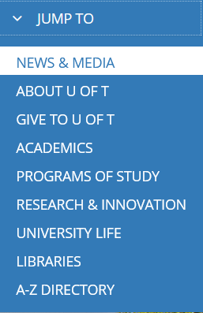

Process
Thinking and Designing
I always wanted to make a website for “machine learning”. Given the opportunity of the assignment, I directly picked up machine learning as my topic.
On Wiki page, machines learning has many subtopics in the table of content. There are sixteen subtopics, including the externals links and references stuffs. Therefore, I decided to divide the whole sixteen subtopics into two. Therefore, it means that I need at least two navigations bars for different purposes (a main one for content and another one for utility). The reasons for breaking up the subtopics are to give the viewers a clearer views of the structure of the website. For example, pick two subtopics from the table of content, “Externals links” and “History and relationships to other fields”, apparently, they are two different utility: one is actual content relate to the topic, and the other one is supporting materials. In other words, in my opinion, they are not the level navigational content and should be broken into two parts.
Therefore, when I started to look for website, I am specifically looking for websites that could: first, have two different types of navigation bars, which are utility and main; second, a design of navigations bars that could hold many links: I try not to put too many navigation links in one line because they could cause confusion due to different structures, unless they are all in one categories. When I saw the official website of University of Toronto, I think I found it. Its navigation bar consists of four parts.
There are two side navigation bars, one icon, and one main navigations bar. A highlight for the “Jump To”: it is a dropdown menu for things that are less important than the ones in the main navigation bar. With this design, even with even more web links, it could still fit it in the navigation bars.

I then decided for the top left navigation bar, I would put the inner page, process page, and reference page. Since these are the pages for assignment marking, it would be hard for TA and the professor to find the pages I worked on from about 20 web links, which most does not have content. For the main navigation bar (the dark blue bar at the bottom), I put all the contents that describe the topic (there are 10 subtopics for the actual content) on the main navigation bar. For the reset of six links of supporting material, I arrange it in the “Jump To” area.
Planning and Execution
Since the main point of the assignment is mocking up the structure of the website, I prioritized the header and the footer as my first tasks. I mocked up the main navigation bar first, then the utility navigation bar through “justify-content”. The same to footer, UofT have two footers: one for social media, and other one for links. After those, I then work on the main content body.
I have found many problem through executing. For example, I found that I did not plan the content section well (or UofT's content is very complex: most of the content styling are not repeating, every content have unique looks), when latter of my codding, I found that I wrote many repeated code even though there are only small differences. I believe I could kind of solve this by the inheritance (@extend I believe). However, I never tried it nor have much time left, therefore, I failed to implement it.
I think not just figuring out the IA graph could help, but also if possible, the prototype could also help. Espeically, first having the css style implementations on the style of the content instead of mock up directly with the UofT website could save a lot of time. (if that is not clear, take apart the website and analysis the implementation of each part of the content, and then start working).
However, there are some designs UofT has that I think could perfectly help my contents.
The first one is:
UofT website uses color to distinguish different section of content. The pattern usually is first white section, then dark blue, then white loops. Instead of uses lines, UofT uses a more material design approaches.
The second design is:
It breaks the page in two side. Each side showing information that is equivalent important to the other side.
In my design, instead of two side, I break it into three cards, each card is showing equal information about machine learning in Overview page.
Reference:
Detailed Reference Sheet please see at Reference